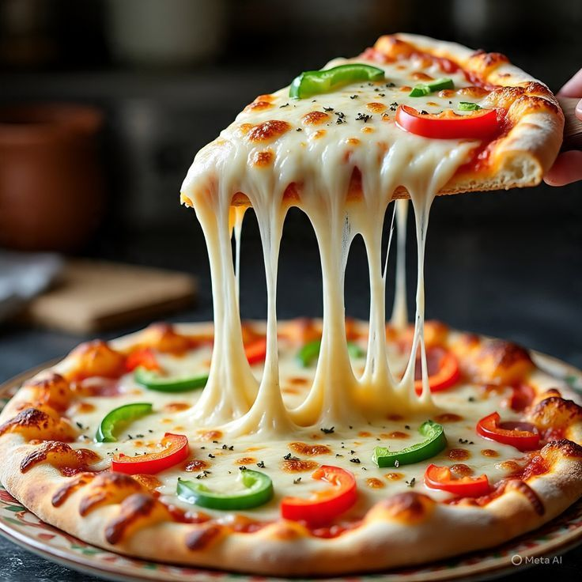
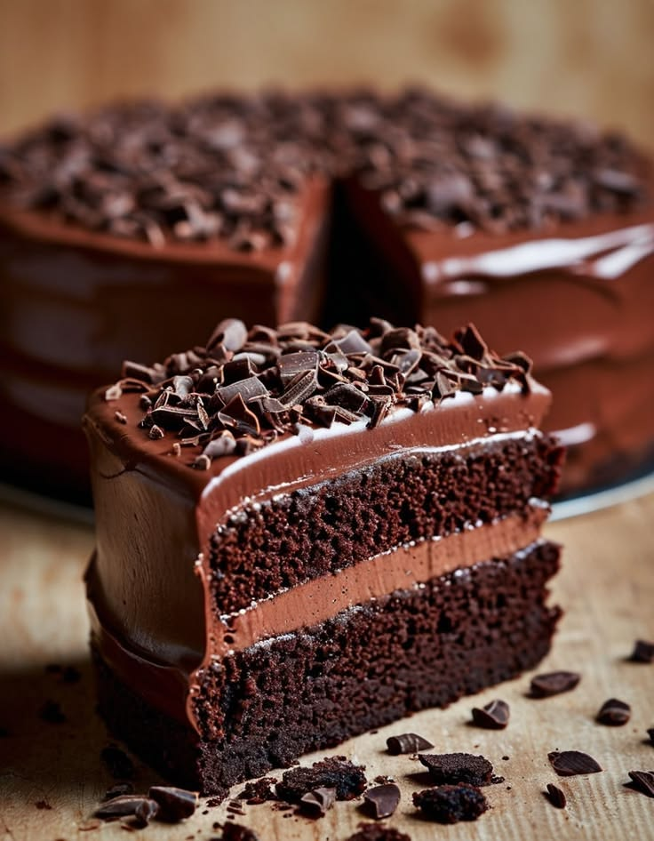
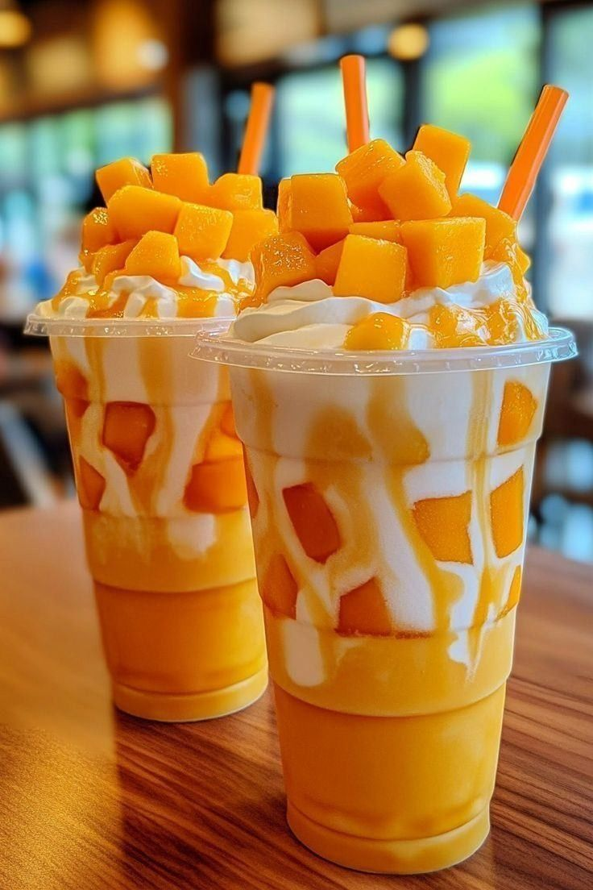
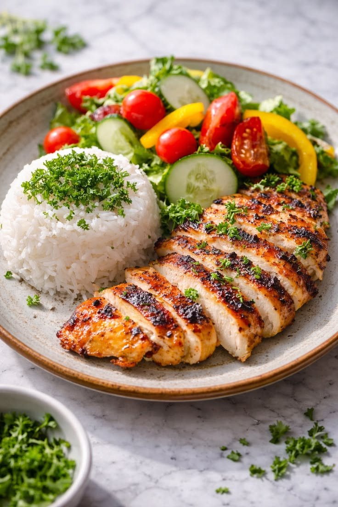

Pizza
Biisadu waa mid ka mid ah cuntooyinka ugu caansan dunida. Waxaa laga sameeyaa cajiin, maraqa yaanyada, farmaajo, iyo waxyaabo kala duwan oo dusha lagu saaro. Dad badan waxay jecel yihiin inay biisada la cunaan qoyskooda iyo saaxiibadood. Biisada waxaa lagu samayn karaa guriga ama waxaa laga iibsan karaa maqaayad. Biisada aan ugu jeclahay waa tan farmaajada iyo digaagga, sababtoo ah aad bay u macaan tahay.

Burger
Burger waa cunto caan ah oo ay dad badan jecel yihiin. Waxaa lagu sameeyaa rooti, hilib, khudaar, iyo suugo. Burger-ka waxaa laga cuni karaa maqaayadaha ama guriga ayaa lagu diyaarin karaa. Dad badan waxay la cunaan baradho shiilan iyo cabitaan. Burger-ka aan ugu jeclahay waa kan digaagga sababtoo ah aad buu u macaan yahay.

Somali Tea
Shaahu waa cabitaan ay dad badan maalin kasta cabbaan. Waxaa laga sameeyaa caleenta shaaha iyo biyo kulul. Dadka qaar waxay ku daraan sonkor ama caano si uu u dhadhamo. Shaaha waxaa badanaa la cabbaa subaxdii ama galabtii. Waxaan jeclahay shaaha sababtoo ah waa macaan oo nasasho ayuu i siiyaa.

Pasta
Baastadu waa cunto ay dad badan dunida ka jecel yihiin. Waxaa lagu kariyaa maraq iyo suugo kala duwan. Dad badan waxay ku daraan hilib, digaag, ama khudaar. Baastada waxaa lagu cuni karaa qadada ama cashada. Waxaan jeclahay baastada sababtoo ah waa macaan oo si fudud ayaa loo diyaariyaa.

Cake
Keeggu waa macmacaan ay dad badan jecel yihiin. Waxaa laga sameeyaa bur, ukun, sonkor, iyo caano. Keegga waxaa badanaa lagu cunaa maalmaha dhalashada iyo munaasabadaha kale. Waxaa jira noocyo badan oo keeg ah sida shukulaatada iyo vanilada. Waxaan jeclahay keegga shukulaatada sababtoo ah aad buu u macaan yahay.

Juice
Casiirku waa cabitaan caafimaad leh oo laga sameeyo miro cusub. Waxaa jira noocyo badan sida casiirka liinta, cambe, iyo tufaaxa. Dad badan waxay cabbaan casiirka si ay u helaan fiitamiino. Casiirka waxaa lagu cabbaa xilliyada cuntada ama marka la harraado. Waxaan jeclahay casiirka cambe sababtoo ah waa macaan oo nafaqo leh.

Chicken
Digaaggu waa cunto ay dad badan jecel yihiin. Waxaa loo karin karaa siyaabo kala duwan sida shiilid ama dubid. Digaaggu wuxuu ka kooban yahay borotiin badan oo jirka waxtar u leh. Dad badan waxay la cunaan bariis ama rooti. Waxaan jeclahay digaagga sababtoo ah waa macaan oo nafaqo leh.

Coffee
Qaxwadu waa cabitaan ay dad badan jecel yihiin. Waxaa laga sameeyaa miraha qaxwada oo la dubay lana shiiday. Dad badan waxay cabbaan qaxwada subaxdii si ay u dareemaan firfircooni. Qaar waxay ku daraan sonkor ama caano. Waxaan jeclahay qaxwada sababtoo ah way udgoon tahay oo dhadhan fiican ayay leedahay.